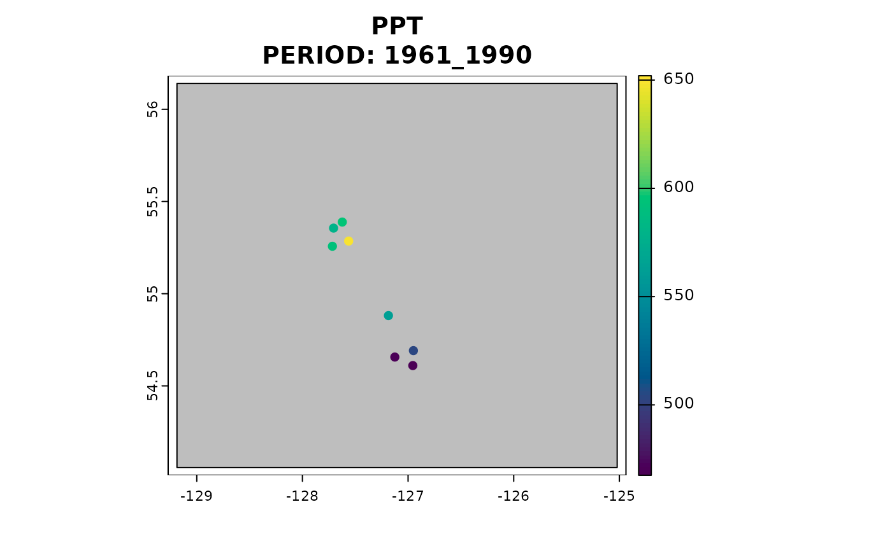

Self-contained change-factor downscaling of observed and simulated climate data
climr_downscale.Rdclimr_downscale() provides downscaled climate variables for user-specified locations.
climr_downscale() adapts a simple change-factor (aka "delta') downscaling approach originally implemented in ClimateNA.
This approach downscales climate data in three stages:
Change-factor downscaling of coarse-resolution (50-200km grid) monthly temperature and precipitation data from climate models or observational sources to high-resolution (800m grid);
Elevation adjustment of temperature variables to provide scales finer than the high-resolution reference grid; and
Calculating derived variables from the downscaled monthly temperature and precipitation variables.
See vignette("methods_downscaling", package = "climr") for a description of the downscaling methodology.
climr_downscale() is a user-friendly wrapper for downscale()
Usage
climr_downscale(
xyz,
which_normal = "auto",
historic_period = NULL,
historic_ts = NULL,
gcm_models = NULL,
ssp = list_ssp(),
gcm_period = NULL,
gcm_ts_years = NULL,
gcm_hist_years = NULL,
max_run = 0L,
return_normal = TRUE,
vars = sort(sprintf(c("PPT%02d", "Tmax%02d", "Tmin%02d"), sort(rep(1:12, 3)))),
cache = TRUE,
out_spatial = FALSE,
plot = NULL
)Arguments
- xyz
a
data.framewith the following columns "long", "lat", "elev", and a unique "id". Any extra columns will be ignored and not output.- which_normal
character. Which climatological normals map to use as the high-resolution reference climate map for downscaling. Default is "auto", which selects, for each query point, the best available climatological normals map in declining order of normals_bc, normals_composite, and normals_na. Other options are one of
list_normal(), which will provide a consistent reference map for all points.- historic_period
character. Which historic period for observed climate data, averaged over this period. Options are
list_historic(). DefaultNULL- historic_ts
integer. Vector of years to obtain individual years or time series of observed climate data. Must be in
1902:2015. DefaultNULL- gcm_models
character. Vector of global climate model names. Options are
list_gcm(). Used for gcm periods, gcm timeseries, and historic timeseries. DefaultNULL- ssp
character. Vector of SSP-RCP scenarios (representative concentration pathways paired with shared socioeconomic pathways). Options are
list_ssp(). Defaults to all scenarios available.- gcm_period
character. 20-year normal periods for GCM simulations. Options are
list_gcm_period()- gcm_ts_years
character. Timeseries years for GCM simulations of future scenarios specified by
ssp. Must be in2015:2100- gcm_hist_years
character. Timeseries years for GCM simulations of the historical scenario. Must be in
1851:2014- max_run
integer. Maximum number of model runs to include. A value of 0 returns the
ensembleMeanonly. Runs are included in the order they are found in the models data untilmax_runis reached. Defaults to 0L.- return_normal
logical. Return downscaled climate values for the reference normal period (1961-1990)? Default
TRUE.- vars
character. A vector of climate variables to compute. Options are
list_variables(). Definitions can be found by callingView(variables)and queried by loading the 'variables' object into the R environment withdata(variables). Defaults to monthly PPT, Tmax, Tmin.- cache
logical. Cache data locally? Default
TRUE- out_spatial
logical. Should a SpatVector be returned instead of a
data.frame.- plot
character. If
out_spatialis TRUE, the name of a variable to plot. If the variable exists innormal, then its normal values will also be plotted. Otherwise, normal January total precipitation (PPT01) values will be plotted. Defaults to no plotting (NULL).
Value
data.frame of downscaled climate variables for each location.
All outputs are returned in one table.
Details
downscale() parameters can be applied in climr_downscale(). For example, setting ppt_lr = TRUE in climr_downscale() will apply elevation adjustment to precipitation values.
Although which_normal = "auto" is the default, users are cautioned that this can produce artefacts associated with downscaling to different reference climate maps within and outside the western North American boundary of normal_composite.
We recommend that queries spanning this boundary use which_normal = "normal_na".
Examples
library(data.table)
library(terra)
#> terra 1.7.71
#>
#> Attaching package: ‘terra’
#> The following object is masked from ‘package:data.table’:
#>
#> shift
set.seed(123)
dbCon <- data_connect()
xyz <- data.frame(lon = runif(10, -140, -106), lat = runif(10, 37, 61), elev = runif(10),
id = 1:10)
## get bounding box based on input points
thebb <- get_bb(xyz)
historic <- historic_input(dbCon, thebb, period = "2001_2020")
#> Downloading historic anomalies
#> .
#> Caching data...
plot(historic[[1]][[2]])
## provide or create a lon, lat, elev, and optionally id, dataframe - usually read from csv file
in_xyz <- data.frame(lon = c(-127.70521, -127.62279, -127.56235, -127.7162,
-127.18585, -127.1254, -126.94957, -126.95507),
lat = c(55.3557, 55.38847, 55.28537, 55.25721, 54.88135, 54.65636, 54.6913, 54.61025),
elev = c(291L, 296L, 626L, 377L, 424L, 591L, 723L, 633L),
id = 1:8,
Zone = c(rep("CWH",3), rep("CDF",5)),
Subzone = c("vm1","vm2","vs1",rep("mm",3),"dk","dc"))
## historic observational time series
vars <- c("PPT","CMD","Tave07")
climate_norms_hist <- climr_downscale(xyz = in_xyz, which_normal = "auto",
return_normal = TRUE,
historic_period = "2001_2020",
vars = vars,
out_spatial = TRUE, plot = "PPT") ##specify desired variables to plot
#> Welcome to climr!
#> 'gcm_models' is missing. 'gcm_hist_years', 'gcm_ts_years', 'gcm_period' and 'ssp' will be ignored
#> 'gcm_models' is missing. 'max_run' will be ignored
#> Getting normals...
#> for BC...
#> Downloading new data...
#> .
#> Caching data...
#> Getting historic...
#> Retrieving from cache...
#> Downscaling!!
#> Plotting results for a single period/GCM/run/SSP

## as a data.table
climate_norms_hist <- climr_downscale(xyz = in_xyz, which_normal = "auto",
return_normal = TRUE,
vars = vars,
out_spatial = FALSE, plot = "PPT") ##specify desired variables to plot
#> Welcome to climr!
#> 'gcm_models' is missing. 'gcm_hist_years', 'gcm_ts_years', 'gcm_period' and 'ssp' will be ignored
#> 'gcm_models' is missing. 'max_run' will be ignored
#> Getting normals...
#> for BC...
#> Retrieving from cache...
#> Downscaling!!
#> Warning: 'gcm', 'gcm_ts', 'gcm_hist', 'historic' and 'historic_ts' are missing. Nothing to downscale.
## future projections
climate_norms_fut <- climr_downscale(xyz = in_xyz, which_normal = "auto",
gcm_models = c("ACCESS-ESM1-5"),
ssp = c("ssp370"),
gcm_period = c("2021_2040"),
#gcm_ts_years = 2020:2060,
max_run = 3, #' we want 3 individual runs for each model
vars = vars)
#> Welcome to climr!
#> Getting normals...
#> for BC...
#> Retrieving from cache...
#> Getting GCMs...
#> Downloading GCM anomalies
#> .
#> Caching data...
#> Downscaling!!